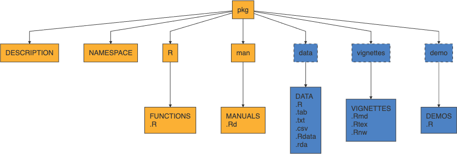
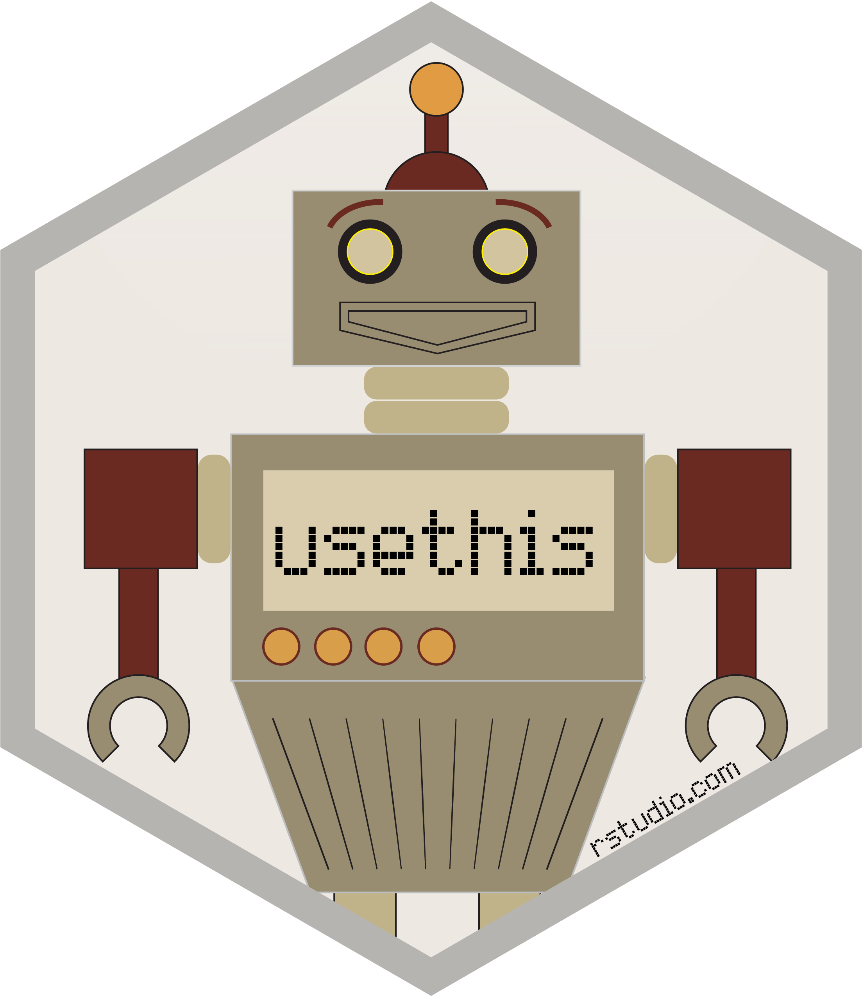

.libPaths() # where all packages live[1] "/Library/Frameworks/R.framework/Versions/4.5-arm64/Resources/library"R packages are just a collection of files - R code, compiled code (C, C++, etc.), data, documentation, and others that live in your library path.
.libPaths() # where all packages live[1] "/Library/Frameworks/R.framework/Versions/4.5-arm64/Resources/library"dir(.libPaths()) # shows directories where individual packages live [1] "abind" "airports" "AnnotationDbi"
[4] "ape" "AsioHeaders" "askpass"
[7] "backports" "base" "base64enc"
[10] "bench" "bestridge" "BH"
[13] "bigD" "Biobase" "BiocGenerics"
[16] "BiocManager" "BiocVersion" "Biostrings"
[19] "bit" "bit64" "bitops"
[22] "blob" "boot" "brew"
[25] "brio" "broom" "bslib"
[28] "cachem" "callr" "car"
[31] "carData" "cards" "cardx"
[34] "caret" "castor" "cellranger"
[37] "checkmate" "cherryblossom" "chromote"
[40] "chron" "class" "classInt"
[43] "cli" "clipr" "clock"
[46] "cluster" "clusterGeneration" "coda"
[49] "codetools" "colorspace" "combinat"
[52] "commonmark" "compiler" "conflicted"
[55] "corrplot" "countdown" "cowplot"
[58] "cpp11" "crayon" "credentials"
[61] "crosstalk" "curl" "data.table"
[64] "datasets" "datawizard" "DBI"
[67] "dbplyr" "DelayedArray" "dendextend"
[70] "DEoptim" "Deriv" "desc"
[73] "deSolve" "devEMF" "devtools"
[76] "diagram" "DiagrammeR" "dials"
[79] "DiceDesign" "diffobj" "digest"
[82] "distr" "distributional" "doBy"
[85] "doParallel" "dotCall64" "downlit"
[88] "dplyr" "DSA.CountData" "DT"
[91] "dtplyr" "duckdb" "e1071"
[94] "editData" "ellipse" "ellipsis"
[97] "emmeans" "estimability" "evaluate"
[100] "expm" "eyedata" "factoextra"
[103] "FactoMineR" "fansi" "faraway"
[106] "farver" "fastmap" "fastmatch"
[109] "fftwtools" "fields" "flare"
[112] "flashClust" "flextable" "fontawesome"
[115] "fontBitstreamVera" "fontLiberation" "fontquiver"
[118] "forcats" "foreach" "foreign"
[121] "Formula" "fs" "furrr"
[124] "future" "future.apply" "gapminder"
[127] "gargle" "gdtools" "geiger"
[130] "gender" "generics" "GenomeInfoDb"
[133] "GenomeInfoDbData" "GenomicRanges" "GEOquery"
[136] "gert" "GGally" "gganimate"
[139] "ggforce" "ggplot2" "ggpubr"
[142] "ggrepel" "ggridges" "ggsci"
[145] "ggsignif" "ggstats" "gh"
[148] "ghclass" "gifski" "gitcreds"
[151] "glmnet" "globals" "glue"
[154] "googledrive" "googlesheets4" "gower"
[157] "GPArotation" "GPBayes" "GPfit"
[160] "graphics" "grDevices" "grid"
[163] "gridExtra" "gsubfn" "gt"
[166] "gtable" "gtools" "gtsummary"
[169] "hardhat" "haven" "here"
[172] "hgu133a.db" "hgu95av2.db" "highr"
[175] "Hmisc" "hms" "htmlTable"
[178] "htmltools" "htmlwidgets" "httpuv"
[181] "httr" "httr2" "ids"
[184] "igraph" "infer" "ini"
[187] "inline" "insight" "ipred"
[190] "IRanges" "isoband" "iterators"
[193] "janeaustenr" "janitor" "jquerylib"
[196] "jsonlite" "juicyjuice" "kableExtra"
[199] "keep" "KEGGREST" "KernSmooth"
[202] "knitr" "labeling" "later"
[205] "latex2exp" "lattice" "lava"
[208] "lazyeval" "leaps" "lhs"
[211] "lifecycle" "limma" "listenv"
[214] "litedown" "lme4" "lmtest"
[217] "lobstr" "loo" "lpSolve"
[220] "lubridate" "magick" "magrittr"
[223] "maps" "markdown" "MASS"
[226] "Matrix" "MatrixGenerics" "MatrixModels"
[229] "matrixsampling" "matrixStats" "mcmcse"
[232] "memoise" "methods" "mgcv"
[235] "microbenchmark" "mime" "miniUI"
[238] "minqa" "mitools" "mlbench"
[241] "mnormt" "modeldata" "modelenv"
[244] "ModelMetrics" "modelr" "moonBook"
[247] "multcomp" "multcompView" "mvtnorm"
[250] "naturalsort" "ncbit" "nlme"
[253] "nloptr" "NLP" "nnet"
[256] "nortest" "numDeriv" "nycflights13"
[259] "officer" "openintro" "openNLP"
[262] "openNLPdata" "openssl" "openxlsx"
[265] "optimParallel" "org.Hs.eg.db" "org.Rn.eg.db"
[268] "otel" "ouch" "palmerpenguins"
[271] "parallel" "parallelly" "parsnip"
[274] "patchwork" "pbkrtest" "phangorn"
[277] "pheatmap" "phytools" "pillar"
[280] "pkgbuild" "pkgconfig" "pkgdown"
[283] "pkgload" "plogr" "plotly"
[286] "plotrix" "plsgenomics" "plyr"
[289] "png" "polspline" "polyclip"
[292] "polynom" "pomp" "posterior"
[295] "praise" "prettyunits" "prismatic"
[298] "pROC" "processx" "prodlim"
[301] "profmem" "profvis" "progress"
[304] "progressr" "promises" "proto"
[307] "proxy" "pryr" "ps"
[310] "psych" "purrr" "qdap"
[313] "qdapDictionaries" "qdapRegex" "qdapTools"
[316] "quadprog" "quantreg" "queryparser"
[319] "QuickJSR" "R.methodsS3" "R.oo"
[322] "R.utils" "R6" "ragg"
[325] "randomForest" "rappdirs" "rat2302.db"
[328] "rbibutils" "rcmdcheck" "RColorBrewer"
[331] "Rcpp" "RcppArmadillo" "RcppEigen"
[334] "RcppParallel" "RcppProgress" "RcppTOML"
[337] "RCurl" "Rdpack" "reactable"
[340] "reactablefmtr" "reactR" "readr"
[343] "readxl" "recipes" "reformulas"
[346] "rematch" "rematch2" "remotes"
[349] "rentrez" "reprex" "repurrrsive"
[352] "reshape2" "reticulate" "rgl"
[355] "RhpcBLASctl" "ridge" "rio"
[358] "rJava" "rlang" "rmarkdown"
[361] "rms" "roxygen2" "rpart"
[364] "rprojroot" "RRphylo" "rrtable"
[367] "rsample" "RSpectra" "RSQLite"
[370] "rstan" "rstatix" "rstudioapi"
[373] "rversions" "rvest" "rvg"
[376] "s2" "S4Arrays" "S4Vectors"
[379] "S7" "sandwich" "sass"
[382] "scales" "scatterplot3d" "selectr"
[385] "sessioninfo" "sf" "sfd"
[388] "sfsmisc" "shape" "shiny"
[391] "shinycssloaders" "shinyWidgets" "sjlabelled"
[394] "sjmisc" "slam" "slider"
[397] "sloop" "snakecase" "SnowballC"
[400] "sourcetools" "spam" "SparseArray"
[403] "SparseM" "sparsevctrs" "spatial"
[406] "splines" "sqldf" "SQUAREM"
[409] "srvyr" "srvyrexploR" "StanHeaders"
[412] "startupmsg" "statmod" "stats"
[415] "stats4" "stringdist" "stringi"
[418] "stringr" "subplex" "SummarizedExperiment"
[421] "survey" "survival" "svglite"
[424] "sys" "systemfonts" "tailor"
[427] "tcltk" "TeachingDemos" "tensorA"
[430] "testthat" "textshaping" "TH.data"
[433] "tibble" "tidymodels" "tidyquery"
[436] "tidyr" "tidyselect" "tidytext"
[439] "tidyverse" "timechange" "timeDate"
[442] "tinytex" "tippy" "TiPS"
[445] "tm" "tokenizers" "tools"
[448] "transformr" "translations" "tune"
[451] "tweenr" "tzdb" "UCSC.utils"
[454] "umap" "units" "urlchecker"
[457] "usa" "usdata" "usethis"
[460] "utf8" "utils" "uuid"
[463] "V8" "vcd" "vctrs"
[466] "venneuler" "viridis" "viridisLite"
[469] "visNetwork" "vroom" "waldo"
[472] "warp" "webr" "webshot"
[475] "webshot2" "websocket" "wesanderson"
[478] "whisker" "withr" "wk"
[481] "wordcloud" "workflows" "workflowsets"
[484] "writexl" "xfun" "XML"
[487] "xml2" "xopen" "xtable"
[490] "XVector" "yaml" "yardstick"
[493] "zip" "zoo" "ztable" installed.packages() lists all installed packages
myFavoritePackages <- installed.packages()
write.csv(myFavoritePackages, "myFavoritePackages.csv")myFavoritePackages <- read.csv("myFavoritePackages.csv")
install.packages(myFavoritePackages[,1], dependencies = TRUE, ask = FALSE)When you run library(pkg), the functions (and objects) in the package’s namespace are attached to the global search path.
search()[1] ".GlobalEnv" "package:stats" "package:graphics"
[4] "package:grDevices" "package:utils" "package:datasets"
[7] "package:methods" "Autoloads" "package:base" library(tidyverse)
search() [1] ".GlobalEnv" "package:lubridate" "package:forcats"
[4] "package:stringr" "package:dplyr" "package:purrr"
[7] "package:readr" "package:tidyr" "package:tibble"
[10] "package:ggplot2" "package:tidyverse" "package:stats"
[13] "package:graphics" "package:grDevices" "package:utils"
[16] "package:datasets" "package:methods" "Autoloads"
[19] "package:base" If you do not want to attach a package you can directly use package functions via ::
useful for avoiding namespace conflicts with functions of the same name from different packages.
requireNamespace() returns TRUE or FALSE depending on if it succeeds - can be useful to test if a package is available.
loadedNamespaces() [1] "gtable" "jsonlite" "dplyr" "compiler" "stats"
[6] "tidyselect" "tidyverse" "stringr" "tidyr" "scales"
[11] "yaml" "fastmap" "base" "ggplot2" "readr"
[16] "R6" "generics" "knitr" "datasets" "methods"
[21] "forcats" "tibble" "lubridate" "pillar" "RColorBrewer"
[26] "tzdb" "rlang" "stringi" "xfun" "utils"
[31] "S7" "timechange" "cli" "withr" "magrittr"
[36] "digest" "grid" "rstudioapi" "graphics" "hms"
[41] "lifecycle" "vctrs" "evaluate" "glue" "farver"
[46] "rmarkdown" "purrr" "grDevices" "tools" "pkgconfig"
[51] "htmltools" 
install.packages("TeachingDemos")remotes::install_github("cran/TeachingDemos")From the terminal
R CMD INSTALL TeachingDemos.tar.gzor from R
install.packages("TeachingDemos.tar.gz", repos = NULL, type = "source"). . .
Why TeachingDemos? See TeachingDemos::stork
The Comprehensive R Archive Network which is the central repository of R packages.
Maintained by the R Foundation and run by a team of volunteers, ~23k packages
Retains all current versions of released packages as well as archives of previous versions
Similar in spirit to Perl’s CPAN, TeX’s CTAN, and Python’s PyPI
Some important features:
All submissions are reviewed by humans + automated checks
Strictly enforced submission policies and package requirements
All packages must be actively maintained and support upstream and downstream changes

.Rd stands for “R documentation”DESCRIPTION - file containing package metadata (e.g. package name, description, version, license, and author details). Also specifies package dependencies.
NAMESPACE - details which functions and objects are exported by your package.
R/ - contains all R script files (.R) implementing package
man/ - contains all R documentation files (.Rd)
The following components are optional, but quite common:
tests/ - contains unit tests (.R scripts)
src/ - contains code to be compiled (usually C / C++)
data/ - contains example data sets (.rds or .rda)
inst/ - contains files that will be copied to the package’s top-level directory when it is installed (e.g. C/C++ headers, examples or data files that don’t belong in data/)
vignettes/ - contains long form documentation, can be static (.pdf or .html) or literate documents (e.g. .qmd, .Rmd or .Rnw)
Installed Package
fs::dir_tree(system.file(package="TeachingDemos"))/Library/Frameworks/R.framework/Versions/4.5-arm64/Resources/library/TeachingDemos
├── DESCRIPTION
├── INDEX
├── Meta
│ ├── Rd.rds
│ ├── data.rds
│ ├── features.rds
│ ├── hsearch.rds
│ ├── links.rds
│ ├── nsInfo.rds
│ └── package.rds
├── NAMESPACE
├── NEWS
├── R
│ ├── TeachingDemos
│ ├── TeachingDemos.rdb
│ └── TeachingDemos.rdx
├── data
│ ├── Rdata.rdb
│ ├── Rdata.rds
│ └── Rdata.rdx
├── help
│ ├── AnIndex
│ ├── TeachingDemos.rdb
│ ├── TeachingDemos.rdx
│ ├── aliases.rds
│ └── paths.rds
└── html
├── 00Index.html
└── R.cssWhat follows is an opinionated introduction to package development,
this is not the only way to make packages (none of the following are required)
I would strongly recommend using:
Read and follow along with R Packages (2e) - Chapter 1 - “The Whole Game”

usethisThis is an immensely useful package for automating all kinds of routine (and tedious) tasks within R
Tools for managing git and GitHub configuration
Tools for managing collaboration on GitHub via pull requests (see pr_*())
Tools for creating and configuring packages
Tools for configuring your R environment (e.g. .Rprofile and .Renviron)
and much much more
Note: the package also loads with devtools.
Rather than having to remember all of the necessary pieces and their format, usethis can help you bootstrap your package development process.
usethis::create_package()An important early step in developing a package is choosing a license - this is not trivial but is important to do early on, particularly if collaborating with others.
There are many resources available to help you choose a license, including:
Create a new .R file in the R folder with the function name as the title. E.g. use the Newton’s method code and call the file newton.
newton = function(f, fp, x, tol) {
for (i in 1:100) {
x = x - f(x) / fp(x)
if (abs(f(x)) < tol) {
return(x)
}
}
return(x)
}All R packages are expected to have documentation for all exported functions and data sets (this is a CRAN requirement). This documentation is stored as .Rd files in the man/ directory.
The Rd format is a markup language that is loosely based on LaTeX
Rd files are processed into LaTeX, HTML, and plain text when building the package
All packages need Rd files, that doesn’t mean you need to write Rd
The premise of roxygen2 is simple: describe your functions in comments next to their definitions and roxygen2 will process your source code and comments to automatically generate
.Rdfiles inman/,NAMESPACE, and, if needed, theCollatefield inDESCRIPTION.
roxygen uses special comment lines prefixed with #'
roxygen specific command have the format @cmd and mostly match Rd commands
devtools::document() or menu Build > Document with reprocess all source files and rebuild all Rds
usethis::create_package() with roxygen = TRUE will initialize your package to use roxygen (default behavior)
#' newton
#'
#' This function takes four arguments: f, fp, x, tol and returns the root a root of f. Note that this function is sensitive to the starting point x.
#'
#'
#' @param f univariate function that you want to find the root of.
#' @param fp first derivative of function f in closed form.
#' @param x starting point
#' @param tol The tolerance term, i.e. how close the function must be to zero in order to terminate.
#' @return Returns an object of indeterminate type because the function is not robustly written.
#' @exportRun devtools::document().
. . .
Check out ?newton
Long form documentation for your package that live in vignette/, use browseVignette(pkg) to see a package’s vignettes.
Not required, but adds a lot of value to a package
Generally these are literate documents (.Rmd, .Rnw) that are compiled to .html or .pdf when the package is built.
Built packages retain the rendered document, the source document, and all source code
vignette("colwise", package = "dplyr") opens rendered version
edit(vignette("colwise", package = "dplyr")) opens code chunks
Use usethis::use_vignette() to create a RMarkdown vignette template
These are un-official extensions to vignettes where package authors wish to include additional long form documentation that is included in their pkgdown site but not in the package (usually for space reasons).
Use usethis::use_article() to create
Files are added to vignette/articles/ which is added to .Rbuildignore
.Rbuildignore excludes certain files from the package build process # Package data
Many packages contain sample data (e.g. nycflights13, babynames, etc.)
Generally these files are made available by saving a single data object as an .Rdata file (using save()) into the data/ directory of your package.
An easy option is to use usethis::use_data(obj) to create the necessary file(s)
Data is usually compressed, for large data sets it may be worth trying different options (there is a 5 Mb package size limit on CRAN)
Exported data must be documented (possible via roxygen)
By default when attaching a package all of that packages data is loaded - however if LazyData: true is set in the packages’ DESCRIPTION then data is only loaded when used.
. . .
pryr::mem_used()90.9 MB. . .
library(nycflights13)
pryr::mem_used()90.9 MB. . .
invisible(flights)
pryr::mem_used()132 MBIf you use usethis::use_data() this option will be set in DESCRIPTION automatically.
When published, a package should generally only contain the final data set, but it is important that the process to generate the data is documented as well as any necessary preliminary data.
These can live any where but the general suggestion is to create a data-raw/ directory which is ignored via .Rbuildignore
data-raw/ then contain scripts, data files, and anything else needed to generate the final object
See examples babynames or nycflights
Use usethis::use_data_raw() to create and ignore the data-raw/ directory.
If you have data that you want to have access to from within the package but not exported then it needs to live in a special Rdata object located at R/sysdata.rda.
Can be created using usethis::use_data(obj1, obj2, internal = TRUE)
Each call to the above will overwrite, so needs to include all objects
Not necessary for small data frames and similar objects - just create in a script. Use when you want the object to be compressed.
Example nflplotR which contains team logos and colors for NFL teams.
If you want to include raw data files (e.g .csv, shapefiles, etc.) there are generally placed in inst/ (or a nested folder) so that they are installed with the package.
Accessed using system.file("dir", package = "package") after install
Use folders to keep things organized, Hadley recommends and uses inst/extdata/
Example sf
R CMD checkLast time we saw the usage of R CMD check, or rather Build > Check Package from within RStudio.
This is a good idea to run regularly to make sure nothing is broken and you are meeting the important package quality standards, but this only in the context of your machine, your version of R, your OS, and so on.
If using GitHub it is highly recommended that you run usethis::use_github_action_check_standard() to enable GitHub actions checks of the package each time it is pushed.
On each push this runs R CMD check on: * Latest R on MacOS, Windows, Linux (Ubuntu) * Previous and development version of R on Linux (Ubuntu)
Package tests live in tests/,
Any R scripts found in the folder will be run when checking the package (not Building)
Generally tests fail on errors, but warnings are also tracked
Testing is possible via base R, including comparison of output vs. a file but it is not recommended (See Writing R Extensions)
Note that R CMD check also runs all documentation examples (unless explicitly tagged dont run) - which can be used for basic testing
Not the only option but probably the most widely used and with the best integration into RStudio.
Can be initialized in your project via usethis::use_testthat() which creates tests/testthat/ and some basic scaffolding.
test/testthat.R is what is run by R CMD Check and runs your other tests - handles some basic config like loading package(s)
Test scripts go in tests/testthat/ and should start with test_, suffix is usually the file in R/ that is being tested.
Build > Test Package to run the package tests. Example:
f1 = function(x) {
x^2
}
fp1 = function(x) {
2 * x
}
stopifnot(
newton(f1, fp1, x = 1, tol = 0.00001) == 0.001953125
)usethis::use_testthat() has an edition argument, this is a way of maintaining backwards compatibility, generally always use the latest edition if starting a new project
From the bottom up,
a single test is written as an expectation (e.q. expect_equal(), expect_error(), etc.)
multiple related expectations are combined into a test group (test_that()), which provides
multiple test groups are combined into a file
After building, you will see package_name_version.tar.gz appear in the parent directory.
We can install with
install.packages("pkg_name_and_version.tar.gz", repos = NULL, type = "source")